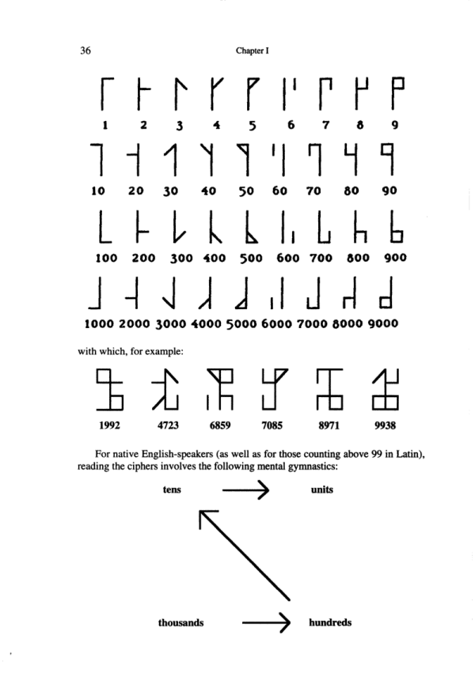

Last week I was lucky enough to attend DEF CON for the first time and it did not disappoint. I've been out of commission for a few days with the con plague, but I'm feeling well enough now to try some blogging.
Last week I was lucky enough to attend DEF CON for the first time and it did not disappoint. I've been out of commission for a few days with the con plague, but I'm feeling well enough now to try some blogging.
This isn't the first write up to appear for the badge challenge. There's the winning team's write up, and runner up team potatoe sec's write up.
Why am I writing another one? Mostly it's because I wanted to make sure I really understood the challenge and it's solution. Additionally, I've noticed that the other two are either missing steps, or contain mistakes.
Let's start with some background (you can skip this if you know about the badge challenge). DEFCON is a hacker conference, and hackers love puzzles. As a result, for the past 5 years (I think) 1o57 has created a series of mind bending puzzles centered around the badges that DEFCON attendees get. It's designed to be solved in 3 days and force people to interact and talk since there are multiple different types of badges.
My interest in the badge challenge first got piqued when I read through a DC21 walkthrough by last year's winning team. I didn't have a team or the willingness to miss all the other things going at DEFCON, so most of this walk through is based off of the two guides I mentioned above and a taxi ride with a member of the runner up team on the way to the airport, and the fine folks who hung around room 1057.
So, what follows is as legible and clear a walkthrough as I can manage. Please leave comments if you spot any mistakes, or feel I've explained something using an identity like 2+2=5.
If you want to follow along at home, you can download this archive which contains as much of the badge challenge materials as I could manage to gather together. I'm still missing good photos of the front and back of all the badges, so if you have a one, please send it my way.
Final note: unless otherwise noted, all materials that follow (include the text) is released under a creative commons attribution license

(source: me)
This is the lanyard. There are 3 important parts to it.
First, there's the Chinese numbers on the left, which you can read with this handy chart:
一 1
二 2
三 3
四 4
五 5
六 6
七 7
八 8
九 9
十 10
Then, here are the weird symbols in the middle. Those are 4 digit numbers written using the Cistercian cipher from The Ciphers of the Monks. You can decode them with:

(source: The Ciphers of the Monks)
The last part is a Korean word, saying either vertical or horizontal
수직 (sujig): vertical
수평 (supyeong): horizontal
Big thanks to 1o57, who showed up at one point with a full set of EIGHT lanyards, pictured below

(source: me)
It was pretty tough trying to gather all of them. Initially, the total number of lanyards was unclear.
We had a hell of a time trying to gather all of the lanyards before 1o57, since we assumed the numerals were unique and didn't look for the other 4 and we thought there might be a lanyard with a Chinese 1 or 3. Also, we thought there might even be 9 lanyards, since there were 3 "suits" in the DEFCON iconography: (the happy skull and cross-bones, the rotary dial and the floppy disk).
Anyway, how do you decode these?? It turns out the Cistercian numbers are all in the range of upper case decimal ASCII, but without an ordering it's gibberish.
First, you have to divide the lanyards into vertical and horizontal.
At one point LoST mentioned that he really loved weaving potholders as a kid, so clearly the lanyards need to be woven together in some fashion.
Next, it turns out that all of the lanyards are less than 15, so they can be written in binary using only 4 bits.
Horizontal
3 | 0 0 1 1
4 | 0 1 0 0
4 | 0 1 0 0
9 | 1 0 0 1
Vertical
5 10 11 14